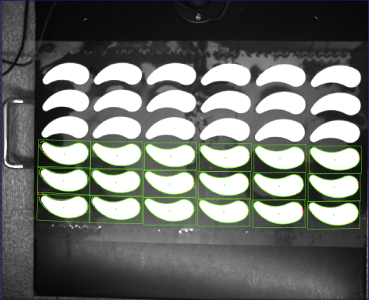
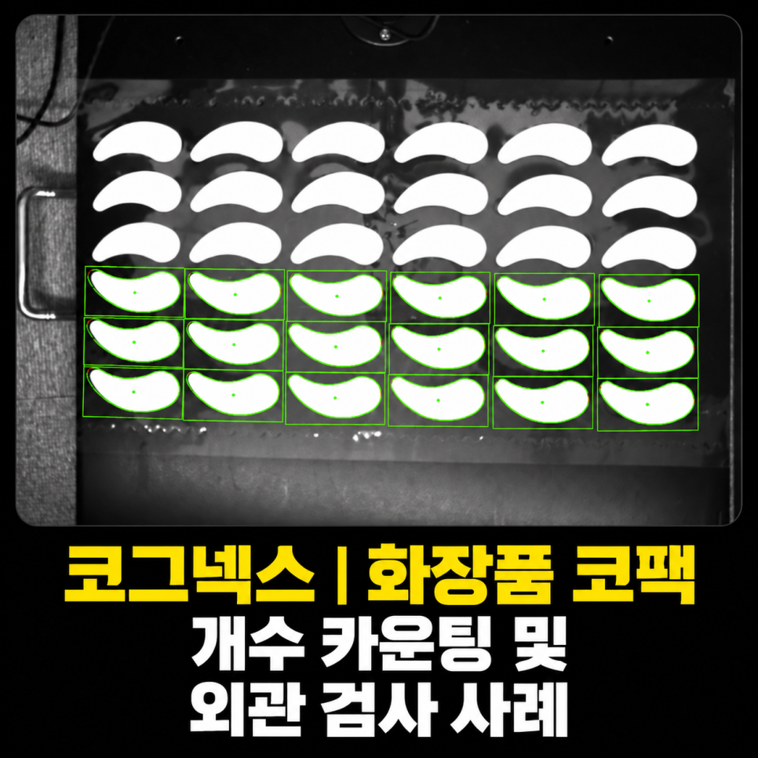
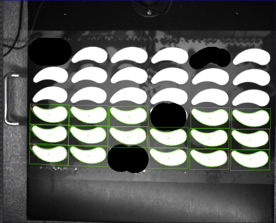
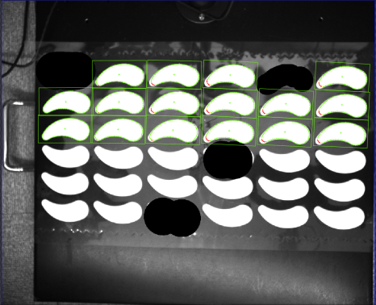

화장품 · 코팩 · 광학 · 조명
화장품 코팩 개수·외관검사 시스템 사례
머신비전 · 광학 설계
최대 36개 코팩의 앞·뒷면 방향별 개수를 세고 구멍·절단 불량을 함께 검사한 사례입니다. 다양한 색상 제품을 초기 설정 후 레시피 변경 없이 검사하도록 구성했습니다.

Project Summary
프로젝트 핵심 구성
- 산업
- 화장품 · 코팩
- 검사·자동화 대상
- 화장품 코팩 개수·외관검사
- 주요 기술
- 머신비전 · 광학 설계
- 적용 구분
- 프로젝트 사례
01 · Overview
프로젝트 개요
최대 36개 코팩의 앞·뒷면 방향별 개수를 세고 구멍·절단 불량을 함께 검사한 사례입니다. 다양한 색상 제품을 초기 설정 후 레시피 변경 없이 검사하도록 구성했습니다.
02 · Problem
프로젝트에서 해결해야 했던 문제
고객사는 화장품 생산라인에서 코팩을 포장하기 전 개수를 확인하고 있었습니다.
하지만 다음과 같은 문제가 있었습니다.
작업자가 직접 개수를 확인해야 함
제품 방향이 일정하지 않음
일부 제품은 위를 향하고 일부는 아래를 향함
구멍이 뚫리거나 잘린 불량도 함께 검사해야 함
여러 제품을 동시에 검사해야 함
특히 한 번에 최대 36개의 제품을 동시에 검사해야 했기 때문에 작업자의 피로도와 휴먼에러가 발생할 가능성이 높은 공정이었습니다.
- 최대 36개 동시 검사
- 앞·뒷면 방향별 카운팅
- 구멍·절단 불량
03 · System
검사·자동화 시스템 구성
최대 36개 코팩의 앞·뒷면 방향별 개수를 세고 구멍·절단 불량을 함께 검사한 사례입니다. 다양한 색상 제품을 초기 설정 후 레시피 변경 없이 검사하도록 구성했습니다.
앞·뒷면 구분
방향별 개수 카운팅
구멍·절단 검사

04 · Inspection
고객의 고민
고객사는 화장품 생산라인에서 코팩을 포장하기 전 개수를 확인하고 있었습니다.
하지만 다음과 같은 문제가 있었습니다.
작업자가 직접 개수를 확인해야 함
제품 방향이 일정하지 않음
일부 제품은 위를 향하고 일부는 아래를 향함
구멍이 뚫리거나 잘린 불량도 함께 검사해야 함
여러 제품을 동시에 검사해야 함
특히 한 번에 최대 36개의 제품을 동시에 검사해야 했기 때문에 작업자의 피로도와 휴먼에러가 발생할 가능성이 높은 공정이었습니다.
05 · Inspection
제품 방향이 서로 달랐습니다
이번 프로젝트의 가장 큰 특징은 제품 방향이 일정하지 않았다는 점입니다.
코팩은 작업 과정에서
앞면이 보이도록 놓인 제품
뒷면이 보이도록 놓인 제품
이 함께 존재했으며,
두 제품은 서로 180° 방향이 다른 형태였습니다.
따라서 단순히 전체 개수만 세는 것이 아니라
각 방향의 제품을 각각 구분하여 개수를 카운팅해야 했습니다.
또한
제품이 잘렸는지
구멍이 발생했는지
까지 동시에 검사해야 했습니다.


06 · Inspection
다양한 색상의 제품도 안정적으로 검사
제품 종류가 많다 보니 색상도 다양했습니다.
일반적으로 제품 색상이 달라지면 검사 조건도 함께 수정해야 하는 경우가 많습니다.
하지만 이번 프로젝트에서는 제품 특성에 맞는 조명을 선정하여 다양한 색상의 제품도 안정적으로 검사할 수 있도록 시스템을 구축하였습니다.
광학 조건을 먼저 최적화한 덕분에 별도의 복잡한 조건 변경 없이 안정적인 검사가 가능했습니다.
07 · Inspection
레시피가 많아도 한 번만 설정
또 하나의 장점은 운영 편의성이었습니다.
생산라인에서는 제품 종류가 많아질수록 레시피 관리가 어려워집니다.
이번 프로젝트 역시 다양한 제품이 생산되고 있었지만,
초기 세팅 이후에는 별도의 레시피 변경 없이 지속적으로 사용할 수 있도록 시스템을 구축하였습니다.
제품 변경 시마다 작업자가 복잡한 설정을 변경할 필요가 없어 운영 부담을 크게 줄일 수 있었습니다.
08 · Inspection
꼭 고가의 시스템만 필요한 것은 아닙니다
이번 프로젝트는 초고가 AI 시스템이 아닌 합리적인 비용의 머신비전 시스템으로 구축하였습니다.
고객이 원하는 검사 항목과 생산 환경을 충분히 분석한 후,
필요 이상의 고가 장비를 제안하기보다 목적에 맞는 장비를 선정하여 비용을 절감하면서도 안정적인 검사 성능을 확보하였습니다.
머신비전은 항상 가장 비싼 장비가 정답이 아니라,
현장에 가장 적합한 시스템을 선택하는 것이 중요합니다.
09 · Inspection
이번 프로젝트를 통해 고객이 얻은 효과
이번 시스템 구축으로 고객사는 다음과 같은 효과를 얻을 수 있었습니다.
✔ 최대 36개 제품 동시 검사
✔ 코팩 개수 자동 카운팅
✔ 앞·뒷면(180° 방향) 자동 구분
✔ 구멍 및 절단 불량 자동 검사
✔ 작업자의 육안 검사 최소화
✔ 휴먼에러 감소
✔ 다양한 색상 제품 안정적 대응
✔ 레시피 변경 최소화
✔ 합리적인 비용으로 자동화 구축
✔ 생산성 및 품질 향상
10 · Inspection
ASPEC의 생각
머신비전이라고 해서 항상 고가의 시스템이 필요한 것은 아닙니다.
고객의 생산 환경과 예산을 충분히 분석하면,
합리적인 비용으로도 충분히 높은 검사 성능을 확보할 수 있는 경우가 많습니다.
ASPEC은 단순히 가장 비싼 장비를 제안하는 것이 아니라,
고객이 원하는 성능을 가장 효율적인 비용으로 구현하는 것을 중요하게 생각합니다.
자동차, 제약·바이오, 식품, 전자부품뿐 아니라 화장품 산업에서도 다양한 머신비전 프로젝트를 수행하며 축적한 경험을 바탕으로 고객의 생산 환경에 가장 적합한 솔루션을 제안하고 있습니다.
Operation
현장 적용과 운영 조건
최대 36개 코팩의 앞·뒷면 방향별 개수를 세고 구멍·절단 불량을 함께 검사한 사례입니다. 다양한 색상 제품을 초기 설정 후 레시피 변경 없이 검사하도록 구성했습니다.
- 최대 36개 동시 검사
- 앞·뒷면 방향별 카운팅
- 구멍·절단 불량
Result
적용 효과
- 최대 36개 제품 동시 검사
- 코팩 개수 자동 카운팅
- 앞·뒷면(180° 방향) 자동 구분
- 구멍 및 절단 불량 자동 검사
- 작업자의 육안 검사 최소화
- 휴먼에러 감소
- 다양한 색상 제품 안정적 대응
- 레시피 변경 최소화
- 합리적인 비용으로 자동화 구축
- 생산성 및 품질 향상
Engineering
ASPEC의 머신비전 시스템 설계 방식
검사 대상의 재질과 형상, 설치 공간과 생산 조건에 맞춰 장비·광학·소프트웨어와 설비 연동을 함께 검토합니다.
- 최대 36개 동시 검사
- 앞·뒷면 방향별 카운팅
- 구멍·절단 불량
08 · Related Cases
관련 구축사례
비슷한 공정의 자동화를 검토하고 계신가요?
검사 대상과 불량 샘플, 설치 공간, 택타임을 알려주시면 적용 구성을 검토해 드립니다.